Challenge
Feedback on engineering deliverables scattered across email and marked-up files, away from the part of the model it described.
Case study / Document collaboration
Designing the document reader for OpenText Core Collaboration for Engineering, where owners and suppliers settle design questions before they turn into rework.
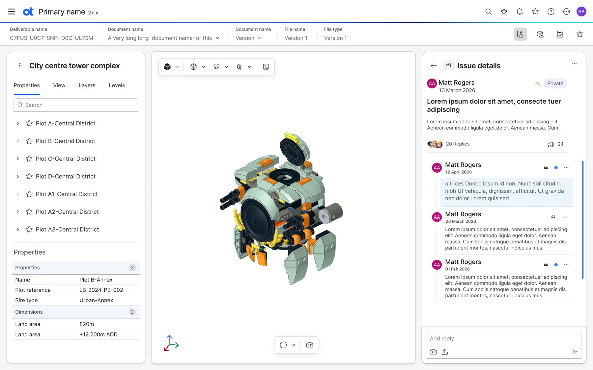
Feedback on engineering deliverables scattered across email and marked-up files, away from the part of the model it described.
An issue log inside the reader, so every comment is anchored to a view, a mark-up, or a selected part.
A traceable review loop where every comment stays connected to the exact document context, discussion, and resolution.
Core Collaboration for Engineering is a cloud workspace where owner/operators exchange contract deliverables and transmittals with suppliers, without email, FTP, or shared drives. Suppliers work in a separate space, so the owner’s main repository stays protected.
The reader is where those deliverables are examined. It opens 2D drawings and 3D models in the browser, and it is where the feedback loop either works or breaks. When it breaks, mistakes surface late as delays, missed SLAs, and costly rework.
The design problem: A reviewer who spots a problem on a model has to explain where it is, what is wrong, and who should act. The next person often cannot connect an email back to the model. The aim was to make pointing at something as quick as noticing it, and keep the conversation attached to the issue.
Create feedback where the problem is. Do not make reviewers switch tools to describe a location.
Explain what cannot be undone in plain words before someone commits.
Help a reviewer returning after a week find what changed in seconds.
Research and workshops produced personas across the project, from document controllers to engineers. An affinity map placed each by closeness to a deliverable: responsible, accountable, consulted, or informed.
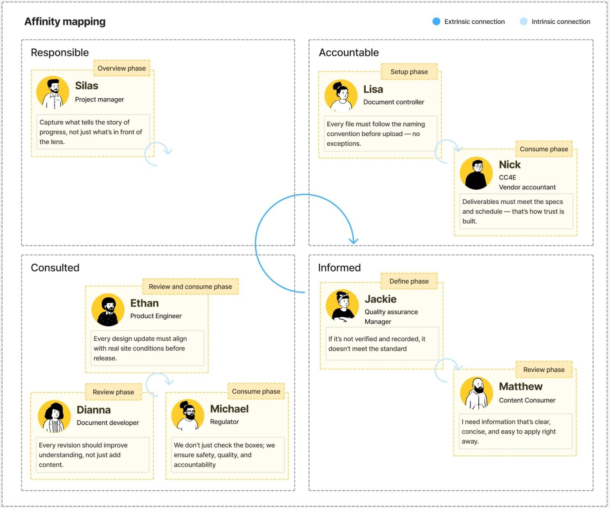
The reader’s heaviest users are reviewers who are consulted or informed. They arrive when asked, often from the supplier side, and judge quickly. That ruled out heavyweight forms and made the first-time experience as important as the tenth.
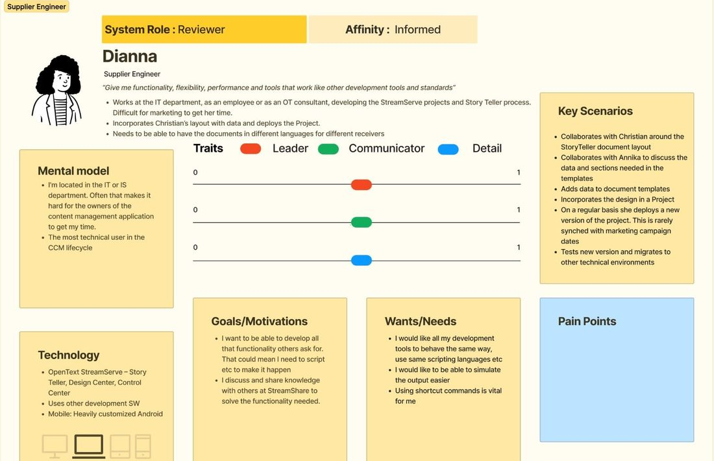
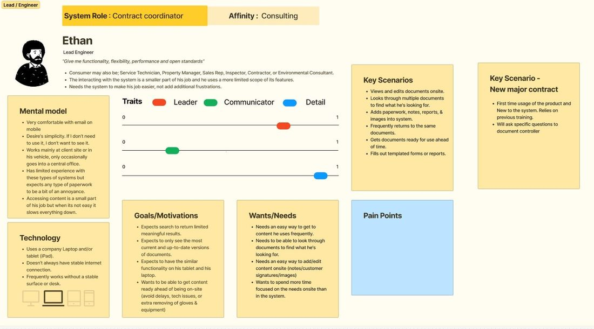
[FILL IN: two or three real research findings and the design decision each one informed]
Reviewers need to see everything raised on a document and know which items are still private.
A side panel lists issues grouped by date. Each item has a number, status, reply count, and attachments. The log belongs to the version being viewed.
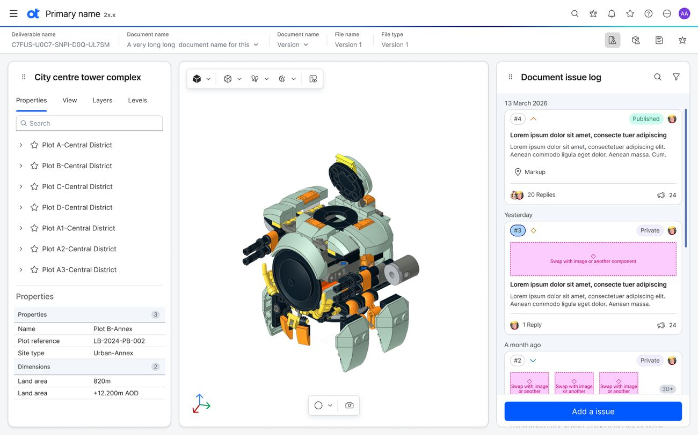
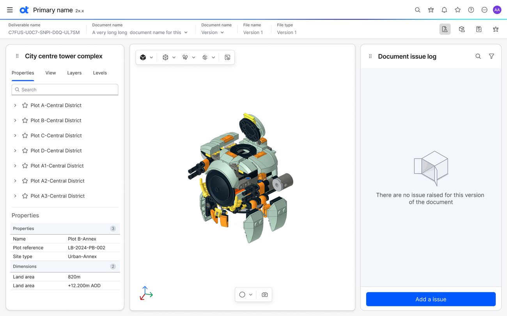
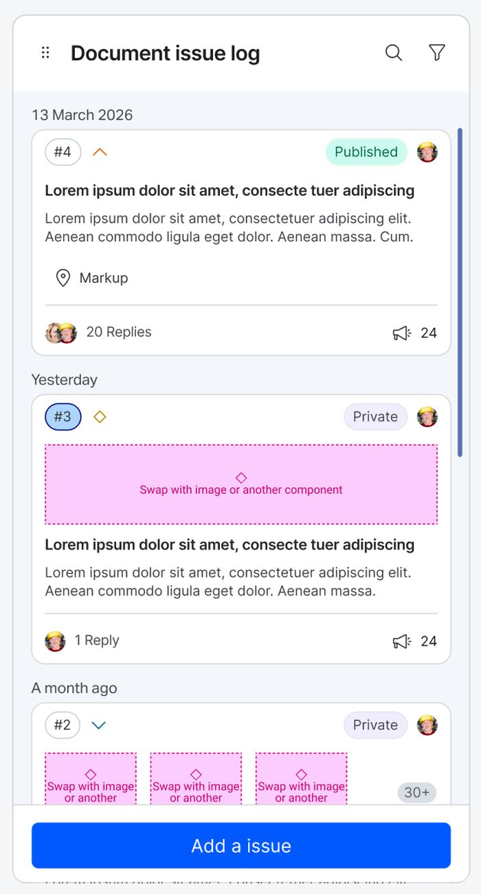
Describing a location in words is slow and ambiguous.
Create an issue from the current view: capture the model, preserve a selected mesh, upload an outside image, or draw a mark-up. Keep Create and Cancel pinned so the form does not hide the model.
Capture with or without a selected part.
Add photos or other images from outside the viewer.
Draw on the capture to make the location explicit.
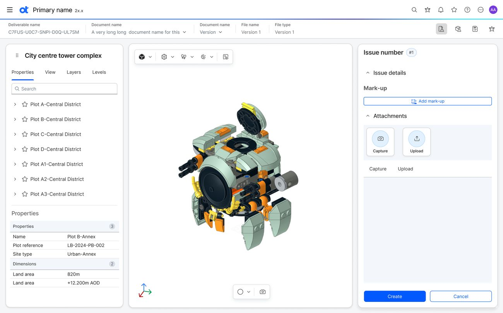
Replies that lose their context recreate the email problem.
Opening an issue replaces the log with a focused thread and a back control. Replies accept the same attachments as the original issue, keeping the discussion with the model.
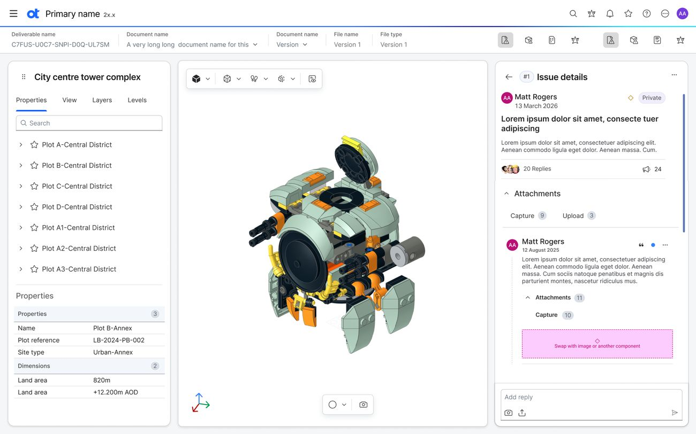
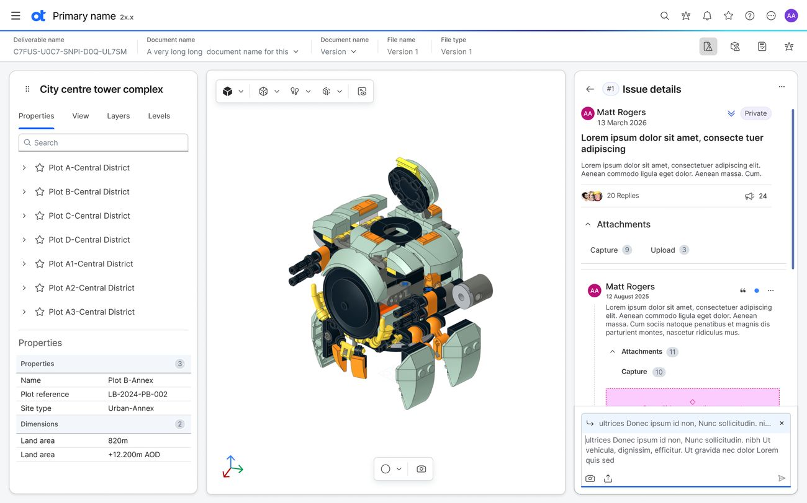
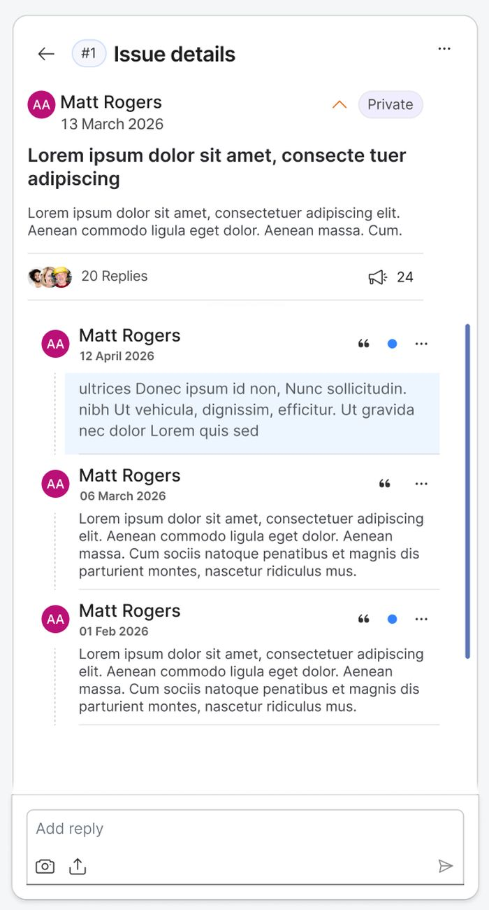
Reviewers may hesitate to raise a half-formed concern if it is instantly visible to everyone.
Issues begin private and can be edited or deleted. Publishing makes them visible to the whole organization and locks them. Confirmation names the issue and explains the irreversible consequence.
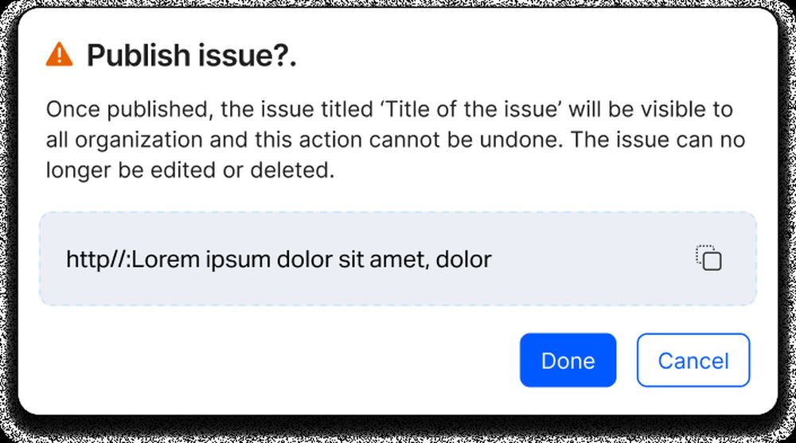
Each interaction was specified as its own state so engineering could build the reader without guessing.
What I learned
It has a place, a history, a set of people, and a clear relationship to the work being reviewed. Designing the reader around that complete context made the collaboration model much more useful than a generic chat panel.
The next opportunity I would explore is helping large teams find the review points that matter most, without weakening the transparent, source-linked history that makes engineering collaboration trustworthy.